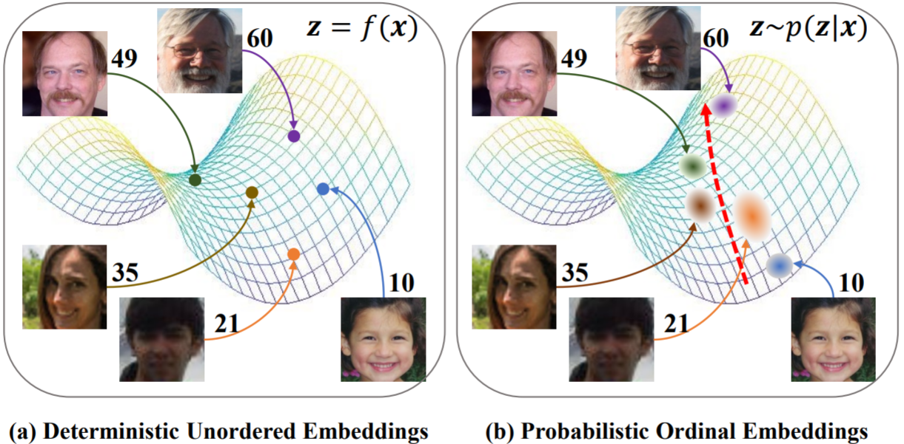
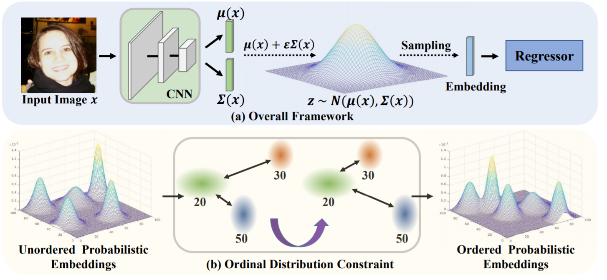
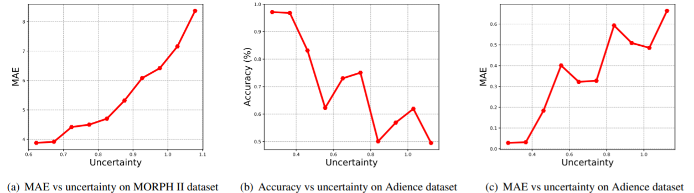

Learning Probabilistic Ordinal Embeddings for Uncertainty-Aware Regression
Uncertainty is the only certainty there is. Modeling data uncertainty is essential for regression, especially in unconstrained settings. Traditionally the direct regression formulation is considered and the uncertainty is modeled by modifying the output space to a certain family of probabilistic distributions. On the other hand, classification based regression and ranking based solutions are more popular in practice while the direct regression methods suffer from the limited performance. How to model the uncertainty within the present-day technologies for regression remains an open issue. In this paper, we propose to learn probabilistic ordinal embeddings which represent each data as a multivariate Gaussian distribution rather than a deterministic point in the latent space. An ordinal distribution constraint is proposed to exploit the ordinal nature of regression. Our probabilistic ordinal embeddings can be integrated into popular regression approaches and empower them with the ability of uncertainty estimation. Experimental results show that our approach achieves competitive performance.

We consider the problem of age estimation and display age labels next to the images. Deterministic unordered embeddings represent each facial image as a point in the latent space without considering the data uncertainty and the ordinal property. By contrast, probabilistic ordinal embeddings learn a distribution following the ordinal constraint in the embedding space. We see that the highly blurred image exhibits high uncertainty and the ordinal relations are preserved with our probabilistic ordinal embeddings.

(A) The overall framework of our approach. Given an input image x, we first obtain the parameters µ(x) and Σ(x), which correspond to the mean and diagonal covariance of a multivariate Gaussian distribution respectively. Then we sample embeddings from this distribution with the reparameterization trick. Lastly, the sampled embeddings are sent to a popular regressor for prediction.
(B) The idea of ordinal distribution constraint. For three samples with labels of 20, 30, and 50, we enforce the ordinal relations in the embedding space with the symmetrized Kullback-Leibler divergence or 2-Wasserstein distance. In the end, we expect that ordered probabilistic embeddings are obtained by applying the ordinal distribution constraint in the latent space.
Correlations between the uncertainty score and different performance metrics on two corrupted test sets. To quantity the correlation, we adopt the Kendall’s tau correlations. For the curves of three sub-figures, the results are 0.956, -0.733, and 0.778, respectively

@inproceedings{li2021probabilistic,
author = {Li, Wanhua and Huang, Xiaoke and Lu, Jiwen and Feng, Jianjiang and Zhou, Jie},
title = {Learning Probabilistic Ordinal Embeddings for Uncertainty-Aware Regression},
booktitle = {Proceedings of the IEEE/CVF Conference on Computer Vision and Pattern Recognition (CVPR)},
month = {June},
year = {2021},
pages = {13896-13905}
}